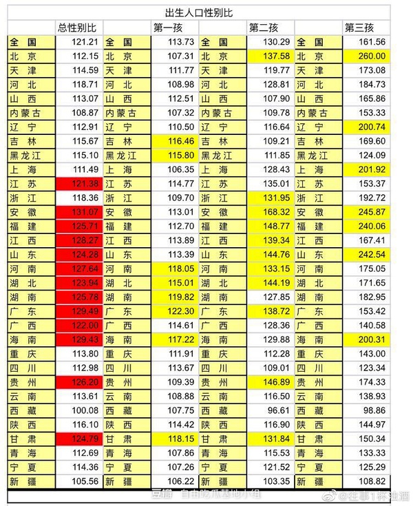

阿乐们
上一篇：中国社会观察
我已经提到了“男人的子宫外挂”，这一篇我们深入探讨出现这种现象的原因。
根据家庭人力资源长期规划 这篇文章，中国的生育率主要依靠“对应措施1”和“对应措施3”。
对应措施1：生3个及以上，指望孩子长大以后给自己养老。
对应措施3：包养多个情妇，生多个孩子。挑选最好的孩子继承家业。
对应措施1和对应措施3对应着贫困家庭和富豪家庭。对应措施1的孩子是当小狗养大的，对应措施3生的孩子都是双语学校出国留学重金培养的孩子。不同阶级存在生殖隔离。
而对应措施1：生3个及以上，这里的女儿们指的就是阿乐们。
阿乐是谁
腾讯新闻、腾讯公益旗下的“谷雨实验室”做出了一系列报道，特约撰稿人陈少远以《莆田弃女》、《最后的童养媳》、《莆田“媒婆”的弃女网络》、《和她们在同一条船上哭泣，我差点也是莆田童养媳》几篇万字长文，向我们揭开了福建莆田现代童养媳们的一角面纱。她们有个共同的名字，叫阿乐。
整个莆田有数以万计的阿乐，她们现在小的年龄二十多岁，大的五十多岁，她们知道自己从哪儿来，从懂事起，她们就被人轻蔑地叫“阿乐”或“长乐仔”。长乐是另一个福建沿海城市，距离莆田一百多公里，受严重的重男轻女风俗的影响，当地人为了生一个儿子，可能会生出两个、三个，甚至四五个女儿。
△她们是嫡亲的三姐妹，成年后苦寻亲生父母无果，却意外地找到了同样被亲生父母抛弃的姐妹，她们都成为了莆田的阿乐。女儿作为生儿子过程中的“副产品”，往往被父母选择溺毙或丢弃，那些侥幸活下来的弃女们，通过“媒婆”这个底层的贩婴网络流出长乐，绝大部分被莆田人买来当“童养媳”或“丫环”，长大后嫁给家里的儿子。即使生长在新时代，阿乐们也没念过一天书，她们从小干繁重的农活和家务，婚配不自由，生育不自由，一辈子捱着苦。陈少远之所以产生记录阿乐这个群体的想法，是因为她也差点成为阿乐中的一员，作为家里的第三个女儿，“幸好”父母在第四胎生出了儿子，如果还是个女孩，家里为了继续追生儿子，是养不起那么多女儿的。因为阿乐们普遍没有文化，更没有话语权，她们成为了这个社会中“看不见的阶层”，有个叫陈树芬的阿乐哭着说，“我们从被送出去的那一刻起，就决定了我们是物品。”陈少远记载下了阿乐这一群体近五十年的悲剧，为她们发声，可是那些字字泣血的文字因为朴实无爆点，没有一篇阅读破十万+。
这无疑是一个时代的悲哀，当无数大城市里的精英知识分子高高在上地指责这两年女性平权矫枉过正的时候，没有人愿意倾听那些低到尘埃里的阿乐们卑微的呐喊。阿乐，是现代的奴隶，她们哪敢妄想什么女权啊，她们连基本的生存的权利、人身自由的权利和自主选择是否生育的权利都没有得到过！当她们的养母以几十元到几百元不等的价格将她们买下的那一刻开始，她们的一生就不由自己决定了。她们从小就被当做苦力使唤，只有很少的阿乐上过几年学，因为养父母们怕她们长了见识就会跑，“我们从小都没出过门，也没有地方去。”有的阿乐在养父母家饱受虐待，她们恨极了自己的亲生父母，陈少远采访的一名叫曹小芹的童养媳说，“他们即便把我杀了，我也不会过得这么苦”。曹小芹没读过一天书，在家只能吃四个哥哥的剩饭，如果养母不高兴，剩饭喂了鸭子也没她的份。养母一生气就打她。她的脑袋挨过一记火钳，留下一道凹陷的坑。她的双腿常被带刺的荆条抽打，要脱了裤子打，打完养母还喊邻居来看。打得更惨时，养母半夜抓着她的头往水里浸，或者挖一个土坑，扔她进去，扬土埋上。
“他们根本不是把我抱回来当人看的。”曹小芹无时不刻不在被提醒：你不是我们家的一员，你是别人生的，你和我们没有血缘关系。舅妈和她的孩子们喊她“别人的杂种”“狗杂种”，四个哥哥最小的大她七八岁，偷了钱，赖给她，她又被一顿打。曹小芹在恸哭中说起过往。她也恨，因为自己是女的，就承受了这样的命运。奶奶告诉她，生母在她之前还生了一个女孩，为了生弟弟才送走了她。
阿乐们大多数在长大后就嫁给了家里的“哥哥”，这些年经济发展快了，“哥哥们”有的外出打工后，看不上家里的阿乐，纷纷自由结婚，阿乐们才有了难得的机会可以外嫁。但是有的“哥哥”，因为先天或后天的残疾，又或者因为不够上进，走不出去，就不得已还是要娶阿乐为妻。这样的婚姻，十件里有九件都不幸福，阿乐与哥哥们的关系，并没有因为十数年的共同成长而变得融洽。她们的丈夫，曾经的哥哥，从小就对她们极少尊重，在他们眼里，阿乐就是家里买来传宗接代的工具和照顾他们的仆人。为此，阿乐们也反抗过这样的命运，曾经有一个15岁童养媳和邻家17岁男生恋爱，怀了孩子，但养父母坚决不同意。她喝农药自杀，尸体从楼梯上被拖下来。埋土时，有人大声骂，这种人死得好，不如烧了撒一把灰，以后别投胎了。有的阿乐成功地逃跑了，有的阿乐在生下儿子，“完成任务”之后，被养父母家允许和“哥哥”离婚，条件是用钱来赎身，她们开心地接受各种苛刻的条件，甚至没有质疑过这笔钱是否该付，只要能奔向自由，她们愿意付出任何代价。
有的阿乐，却死在了家庭暴力之下。2003年2月，童养媳朱秀美被自己的丈夫朱世文用板凳活活打死。1974年，朱世文出生，四岁时，父母就抱回了儿子未来的妻子。亲事定下时，朱秀美刚出生四天，从福建闽侯辗转被卖至莆田。29岁时，朱世文已经是另一个镇乡村小学的教师骨干。他有了外遇，酒后打死了25岁的朱秀美。 因为朱秀美的童养媳身份，这起凶案当时震动舆论。朱世文称，自己和妻子都是“童养媳”这个怪胎的牺牲品。乡亲们对杀人者印象模糊，对被杀者也知之甚少。在他们眼中，朱世文一向沉默寡言，不爱说话，而他和朱秀美寡味的婚姻，在村里太正常了，很多人家都是这么过来的。但在朱世文的描述里，这样的婚姻“只是为了生活和繁衍后代，没什么感情可言”。婚前，他和妻子以兄妹相称，婚后争吵不断。杀妻前一年，母亲曾劝他，实在过不下去就离吧。他没有选择离婚，同是一桩悲剧的牺牲品，他成为了加害者，杀害了比他更为弱势的妻子。在我看来，在童养媳这件事上，无论是亲生父母还是养父母，包括中间的贩卖链条，都是在犯罪，但是由于风俗难改和法不责众的缘故，阿乐们的存在和她们所遭遇的一切都被看作是习以为常的。
2005年莆田某乡镇党委书记回应《半月谈》采访时，曾说过他们没有权力干预童养媳们嫁给“哥哥”留在家里的选择，“只要她们口头表示自愿，我们就要给她们办结婚手续”。更可怕的是，受过教育的城市人群，对这些犯罪事实的漠视和容忍，他们认为所有对底层人群行为合理性的质问，都是“何不食肉糜”的高高在上。人家都娶不到老婆了，你还在这里叨逼叨什么人口买卖是犯罪，这对你来说只是法律问题或者是道德问题，对人家来说可是攸关生存的大问题啊！可我想问的是，男人传宗接代的问题真的有那么重要，重要到可以无视女人生存权和生育权的地步？我非常认同侯虹斌的观点，她说人们总是对乡村的犯罪事实视若无睹，甚至认为农村就该发生这些事才合理：我想，是不是这个社会有两套法律，一套，是针对普通人、正常人的，另一套，是针对所谓的穷人的；一般人遗弃、弄死婴孩，是违法；拐卖妇女，是违法；强迫未成年人结婚，是违法；但如果是穷人，那就都变成了合法，情有可原？而且，我们还要责怪那些批评的人“不体谅穷人不能结婚的痛苦”，“何不食肉糜”？
作者：李小丢
链接：https://zhuanlan.zhihu.com/p/38087581
来源：知乎
著作权归作者所有。商业转载请联系作者获得授权，非商业转载请注明出处。
男人的子宫外挂
30年前那些被卖到莆田的女孩
莆田那些几百块被卖作童养媳的女孩长大了
上个世纪，福建地区有成千上万的女婴，一出生就被送走，她们大多被莆田人收养做“童养媳”。
他们就是所谓的“莆田弃女”。据不完全统计，截止2018年，莆田地区有数以万计这样的弃女，其中有七千多人登记DNA，在不遗余力找自己的父母。
她们长大了，当然可以选择寻找或者不找，但大部分人是不理解的：
你出生时，父母选择放弃你了，现在找到了就能接纳你吗？
我们拍摄了几位“莆田弃女”，她们一直在寻找亲生父母，并渴望与他们相认。
当初，她们被抛弃的理由各不相同。
穷是肯定的，但也有被介绍人哄骗的，说是能把孩子送到条件不错的家庭。
于是，有的家长就把女婴给别人了。可有的理由很荒谬。
雅林被卖掉，是因为命不好。刚出生时算八字，说她“克”兄弟姐妹，“要是把我哥克死了，我妈还能活吗，所以我外婆赶紧把我送走了。”
她们被媒婆（卖孩子的媒介）放在篮子里，挑着走街串巷地吆喝。女婴成为一种货品，从长乐流向了莆田。
既然是货品，就得有价格。在80年代，一个女婴大概是300元，眼神灵活的、长得好看的，最高可以卖到800元。好几天卖不出去的，媒婆也不会给孩子喂奶粉，冲点石灰水对付着就好了。
在莆田，几乎每家都有收养一两个弃女。除了不能生育的家庭，买女孩也是出于“轻女”思想——女孩没成年时是免费的保姆和苦力，成年了，还能嫁给自己儿子。
所以大部分莆田童养媳过得并不好。
曹小芹小时候有奶奶护着，奶奶去世后，她就开始遭受养父母的毒打，太难过了，她就躺在奶奶的坟前哭，像小时候躺在奶奶怀里。
她试过自杀，喝了三勺农药，“但我居然没事，可能老天不让我死。那我就要活得像个人。”
肖星说，七岁的时候，养父母就说以后你是要嫁给哥哥的。
长大后，这些莆田童养媳开始寻亲。有人说她们是白眼狼，养不熟。有人找到了，但亲生父母却躲着不见。
她们也许正在寻找的，是一份活在世上的安心。
幸好，有的弃女现在生活得蛮幸福。曹小芹现在已经结婚生子了。她一边收拾孩子的玩具，一边跟导演唠叨：
“你看他多幸福，他从来都没有缺过什么。”
曹小芹不会再让孩子过苦日子了，她们这辈子缺少了太多。
这一切的源头，只是因为，身为女性。
姐姐们

富生儿子，穷生女。
儿子是重资产模式，女儿是轻资产模式。
如果家里有财富，有理念，有思维，有好习惯，堆在儿子身上更容易实现财富的增值，阶层的提升。因为说白了，男人是很吃装备的大后期职业，氪金之后无上限，懂吧，人民币玩家的最爱，狂氪之后强势期巨长，秒天秒地，土豪必备。但是你没装备，不氪金，那就是下水道，狗都不玩，玩了还不如狗。从1级被虐到18级，永远都是提款机和韭菜。
女儿呢？女儿的成长曲线比较平滑，前期就很猛，0氪也能玩，稍微冲个月卡体验就贼好，前中期全屏秒怪，单手开摩托。但是重氪之后不会有质的提升，而且氪的越多和大后期职业（男人）的差距越大。俗称平民职业，土豪不玩，但是大多数人玩起来，只要操作不拉垮，还是真香。
咱们再说的直白一点，如果你是小康及以下家庭，最多给后代支持个百八十万，也没什么硬货和成功的经验。生个女儿，读个本科，生活自理，独立自主，人格健全，不喝鸡汤，颜值身材正常范围。本科专业好好选，毕业趁应届生资格搞个铁饭碗或者保研之后出来铁饭碗，在本地城市或者比自己出生稍微高级一点的城市找个学历或者家庭比自己好一级的男孩一起生活。这辈子自己不作死，不碰那些不该碰的，大概率是可以安安稳稳，比较舒服的度过。男孩呢？大概率学习成绩比女孩差一些，难带一些，同样配置会被同等级女孩嫌弃，去搞个几千块一个月的铁饭碗也不会很吃香，因为本来就没有底子，铁饭碗上限也很低，大概率找个各方面比自己差一些，搞不好还有明显硬伤的女的结婚，如果不出意外的话，应该会过的比较苦逼，处处被钱制约。
如果你是中产及以上家庭，上不封顶。资产上千万，家庭年收入几十万，不差钱，不工作一辈子都够用了。如果生女儿的话，你会担心你家白菜被猪拱了，你奋斗这么久都便宜了哪个穷小子，而且你的女儿眼光会非常高，傲气无比，将来择偶的时候可选择范围很小，一旦年龄拖大了或者颜值性格不够好，就容易成为“优质剩女”。就算走了985本硕，名企or省直or部委单位这条路子，进去之后大概率也是螺丝钉，职业生涯的上限很低，走到顶尖是几乎不可能的，无论是商业，政界还是科研。如果生儿子的话，走了985本硕，美国或者top2博，出来有家里的支持，提前铺路，既可以科研，又可以部委，还可以经商，而且青春期保质期巨长，从22岁到52岁你都是男神，可选择女生的范围从工薪阶层到各种二代你都能够着。职业生涯大概率上限会更高，至于能不能封顶，那要看天赋和你有没有这个命运。
好了，最后我们还是总结一下。为什么都愿意生女儿了？因为大部分人都没钱啊，而且都明白过来了，china地狱级生存游戏里，女儿开出来吃香啊。但是我要提醒各位玩家，如果你家里没有矿，你们两夫妻也没啥精神力量和强者的习惯给下一代继承，请你不要在已经有女儿的情况下再生个儿子。这会让你女儿直接从easy模式横跳到地狱模式，这种事他不道德，你懂吧。没有皇位和石油就不要天天想着要个带把的了，你说你无不无聊。
哦对了，补充一点，目前的版本，中产及以上不要生独生女，最好给她来个弟弟，就算是个妹妹也行，在有底子的情况下有弟弟不会影响女儿的版本，反而会让她更正常。不然你看知乎上某些我在北京有几套房，出去只住五星级酒店，以后不想工作，也不结婚，生孩子多痛啊，男的要balabala又帅又有钱什么的。还有什么三线城市海景房，几栋楼收租，喜欢女的，放话周围没有人配得上她的拉拉。这很有可能就会变成你女儿。她有的越多，就越骄横，越是在此基础上好逸恶劳，要求对方和整个世界给自己更多。而不是在已经有的基础上去发展，挑战，打拼，分享，再创造。望诸君谨记！！！！
编辑于 2022-12-06 16:26
匿名用户